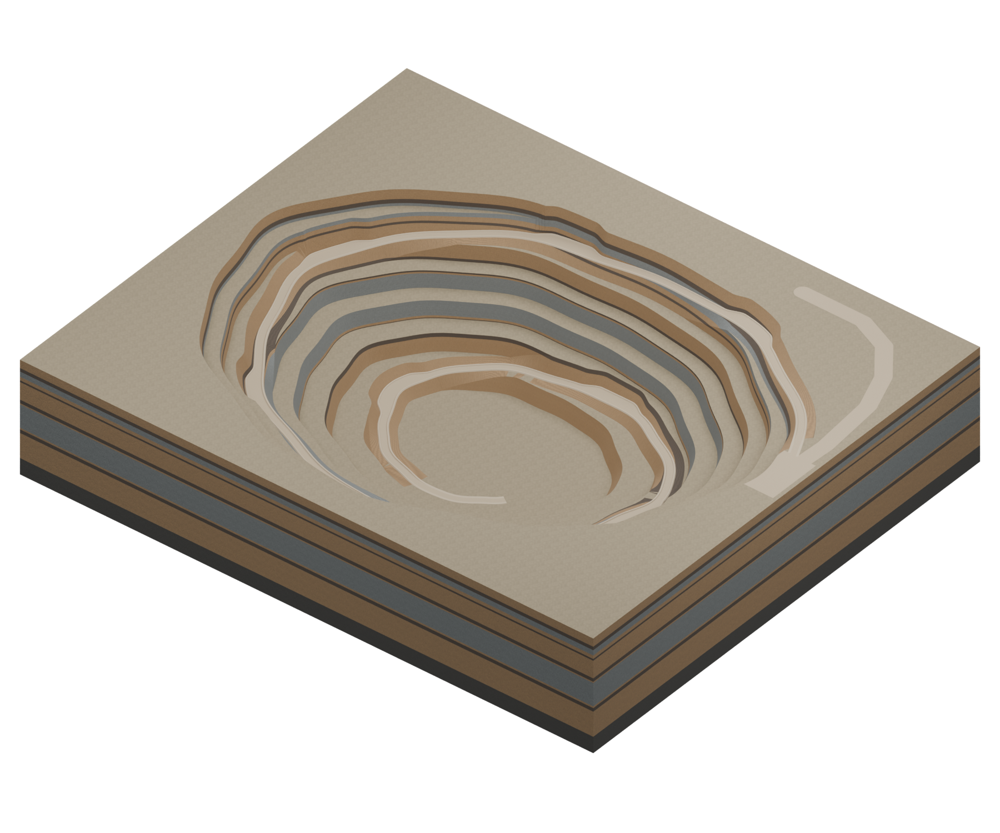

+ ОБЪЕКТ 01 / ОБЩИЙ ВИД

Загружаем 3D-модель0%
Геометрия и PBR-материалы
Вращайте мышью · Колесо — масштаб · Правая кнопка — перемещениеМЕТРЫ / Y ↑
Не удалось открыть 3D
Попробуйте перезагрузить страницу или скачайте модель для просмотра в Blender.
Скачать рельеф ↗